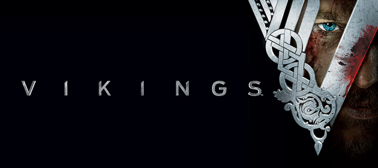

Vikings é uma série de televisão de drama histórico escrita e criada por Michael Hirst para a emissora History. Filmada na Irlanda, a série estreou em 3 de março de 2013 no Canadá e terminou em 30 de dezembro de 2020 com distribuição em streaming pela Prime Video.
Vikings é inspirada nas sagas do Viking Ragnar Lodbrok, um dos mais conhecidos heróis nórdicos lendários e chamado de flagelo da Inglaterra e da França. A série retrata Ragnar como um fazendeiro que alcança a fama por seus ataques bem-sucedidos na Inglaterra e, mais tarde, se torna um Rei escandinavo, com o apoio de sua família e colegas guerreiros: seu irmão Rollo, seu filho Bjorn Flanco de Ferro, e suas esposas, a escudeira Lagertha e a princesa Aslaug.
Sinopse
A série é inspirada nas histórias de invasões, comércio e exploração dos Nórdicos da Escandinávia medieval. A série segue as explorações do lendário líder Viking Ragnar Lodbork, a grande escudeira Lagertha, tripulação e família, como notavelmente foi estabelecido nas sagas Ragnars saga Loðbrókar e Ragnarssona þáttr do século XIII, assim como na obra de Saxão Gramático do século XII, Gesta Danorum. As sagas lendárias nórdicas eram parcialmente contos de ficção baseados na tradição oral nórdica, escritas cerca de 200 a 400 anos após os eventos que descrevem. Mas inspirações são tiradas de fontes históricas da época, como os registros do ataque Viking em Lindisfarne, retratado no segundo episódio, ou a conta de Amade ibne Fadalane sobre os Vikings do Volga, do século X. A série se passa no início da era viking, marcada pelo ataque de Lindisfarne, em 793.
Temporadas
1ª-Temporada(2013)
A série se inicia com as aventuras do guerreiro nórdico Ragnar Lodbork, uma figura histórica que viveu no período Medieval. Considerando-se descendente de Odin, Ragnar busca dominar vários territórios da Europa. Com isso, ele enfrenta a oposição do Earl Haraldson, um ex-guerreiro e agora líder de seu povo, casado com Siggy, uma jovem que tem sua lealdade dividida.
2ª-Temporada(2014)
Ver artigo principal: Vikings (2ª-temporada)Com um certo passar de tempo, Aslaug agora é esposa de Ragnar, com quem cria seus filhos. Rollo se tornou uma figura obscura e autodestrutiva devido à sua vergonha, porém, acaba sendo perdoado por Ragnar—embora ele o proíba de participar de uma nova expedição. Floki termina de construir seus navios, e a expedição se inicia. No entanto, no meio do caminho, uma tempestade afasta os navios de seu destino pretendido, levando os Vikings para Wessex, um reino governado por um Rei impiedoso, Ecbert.
3ª-Temporada(2015)
Ver artigo principal: Vikings (3ª-temporada)Ragnar agora é Rei de Kattegat. Com a promessa dos saxões de novas terras, Ragnar leva seu povo a um destino incerto na costa de Wessex para acompanhar as promessas que o Rei Ecbert prometeu cumprir. Enquanto isso, Ragnar está em busca de algo mais, algo que encontra na cidade de Paris, a capital dos francos. No entanto, a cidade é impenetrável por forças externas, fazendo com que Ragnar e seu grupo de nórdicos se unam para derrubar os muros e cimentar a lenda dos Vikings na história.
4ª-Temporada(2016)
Ver Artigo principal: Vikings (4ª-temporada)Ragnar precisa lidar com Floki, que foi preso por Bjorn devido a um crime impiedoso. Em Wessex, o retorno de Ragnar e dos Vikings é temido. Depois que seu povo é derrotado em Paris, Ragnar abandona seu reinado e deixa Kattegat. Quando retorna anos depois, ele decide voltar para a Inglaterra para corrigir os erros do passado. Com muitos dos guerreiros de Kattegat ao lado de Bjorn, Ragnar e seu filho Ivar chegam em Wessex para o acontecimento de eventos que podem mudar o mundo dos Vikings para sempre. Enquanto isso, Lagertha pretende recuperar o que acredita pertencer a ela, tomando medidas drásticas para isso, o que faz com que Ivar prometa vingança contra ela.
5ª-Temporada (2017-19)
Ver artigo principal:Vikings (5ª-temporada)Em 17 de março de 2016, a emissora History confirmou a quinta temporada da série, que estreou em 29 de novembro de 2017.A temporada contará com 20 episódios.
6ª-Temporada (2019-20)
Em 12 de setembro de 2017, antes mesmo da estreia da quinta temporada, a emissora History confirmou a sexta temporada da série, que contará com 20 episódios.Em 4 de janeiro de 2019, foi anunciado que a sexta temporada seria a última temporada da série.
Produção
Uma co-produção irlandesa-canadense, Vikings foi desenvolvida e produzida pela Octagon Films e pela Take 5 Productions.Michael Hirst, Morgan O'Sullivan, John Weber, Sherry Marsh, Alan Gasmer, James Flynn e Sheila Hockin foram creditados como produtores executivos.O orçamento da primeira temporada teria sido de 40 milhões de dólares
As filmagens da série tiveram início em julho de 2012 nos Ashford Studios, um complexo de estúdios recém-construído na Irlanda, escolhida como locação devido aos incentivos fiscais que ofereceu.Em 16 de agosto de 2012 as cenas envolvendo os drácares foram filmadas em Luggala, no coração das montanhas Wicklow.70% da primeira temporada foi filmada ao ar livre.[7] Algumas cenas adicionais de cenários foram filmadas na Noruega Ocidental.
Johan Renck, Ciarán Donnelly e Ken Girotti dirigiram três episódios cada um.O time de produção incluiu o cinematógrafo John Bartley, o figurinista Joan Bergin, o designer de produção Tom Conroy e o compositor Trevor Morris.
De acordo com o ator Clive Standen, que interpreta o personagem Rollo, as temporadas futuras apresentarão personagens históricos como Alfredo, o Grande, Leif Ericson e Ivar, o Sem-Ossos, assim como viagens à Islândia, Rússia, França e ao outro lado do Oceano Atlântico.
Em 5 de abril de 2013 o History anunciou que havia renovado a série para uma segunda temporada, com dez episódios. Com Ragnar Lodbrok a serviço do rei Horik, ele se enolverá em incursões cada vez maiores na Inglaterra e na França, e terá de lidar com sua vida amorosa e sua família. Ragnar agora tem dois amores: sua esposa, Lagertha, e a princesa Aslaug. Também terá de lidar com seu irmão, Rollo, que o traiu a serviço do rei dos godos. Athelstan também continuará com seu duelo interno, na qualidade de cristão num mundo pagão. Ao longo desta temporada, Ragnar confrontará o rei Egberto de Wessex.
Dois novos atores permanentes foram anunciados em 11 de junho de 2013; Alexander Ludwig, que interpreta Bjorn em sua adolescência, e Linus Roache, interpretando o rei Egberto.A segunda temporada apresentará um avanço no tempo, que transformará o jovem Bjorn (Nathan O'Toole) num hábil espadachim, interpretado por Ludwig. De acordo com relatos, Bjorn ficará sem ver seu pai, Ragner, por "um grande período de tempo". Lagertha terá se casado com um poderoso jarl, um pai adotivo que proporcionará uma criação severa a Bjorn.
Diversas fontes da mídia sueca relataram que os atores Edvin Endre, filho da renomada atriz Lena Endre, de Män som hatar kvinnor e Wallander, e Anna Åström, que co-estrelou recentemente, juntamente com Gustaf Skarsgård, que interpreta Floki, no polêmico filme sueco Vi, teriam papeis na segunda temporada.
Recepção
Criticas
A série recebeu críticas favoráveis, no geral, após a exibição do primeiro episódio, com uma avaliação média de 70% de acordo com o site Metacritic.Alan Sepinwall, do HitFix, elogiou o elenco da série, especialmente Fimmel no papel de Ragnar, comentando que Vikings "não é [uma série] complicada. Ela (...) tem como base a atração inerente a este período e estes personagens para levar a história adiante."Nancy DeWolf Smith, do Wall Street Journal, ressaltou o cenário e os figurinos "naturais e autênticos", elogiando a série por, ao contrário de Spartacus, não ser uma celebração de sexo e violência, mas sim "um estudo de caráter, força, poder e (...) de um despertar social, emocional e até mesmo intelectual".Hank Stuever, escrevendo para o Washington Post, acho que "[esta] nova série dramática, atraente e robusta, (...) entrega todas as cenas gráficas e sangrentas que se esperava dela", acrescentando que ela, ao mesmo tempo, utilizava com sucesso as técnicas dos dramas da televisão a cabo, com todo o cuidado com a atuação e os roteiros e a dimensão de amplitude que remonta a séries como Rome, Sons of Anarchy e Game of Thrones, e que até mesmo a maneira com que a série enfatiza "um senso de orgulho e nobreza neste bando de brutos" serviria para refletir mais uma iteração de Tony Soprano".Neil Genzlinger, no New York Times, louvou a cinematografia "impressionante" e a performance dos atores, especialmente de Fimmel, comparando a série favoravelmente a Game of Thrones e Spartacus devido à ausência de nudez gratuita.
James Poniewozik, na revista Time, comentou que o conflito de gerações relativamente simples que permeia a série não tem nem de longe a ambição narrativa de um Game of Thrones, ou as sutilezas políticas de Rome, ou tampouco a habilidade com que estas obras lidam com os diálogos, mas que ela consegue obter um resultado muito positivo quando comparada com as "histórias de tablóides" de séries como The Tudors e The Borgias. Poniewozik conclui que o maior dos arcos na trama de Vikings fala mais sobre "forças históricas" do que sobre seus personagens, que não seriam por si só tão complexos.Clark Collis, da Entertainment Weekly, elogiou a performance do elenco, porém considerou que Vikings era uma "espécie de bagunça", à qual faltava a intriga de The Tudors e Game of Thrones.Brian Lowry, na Variety, criticou duramente a série, chamando-a de "uma versão mais simplória de Game of Thrones", considerando, no entanto, que ela conseguia atingir "um nível de atmosfera e ímpeto que fazia com que ela funcionasse como uma diversão leve."No San Francisco Chronicle, David Wiegand se disse desapontado pelo "andamento glacial" da série e pela sua falta de ação, bem como pela "direção frouxa e um roteiro fanfarrão", embora tenha apreciado as performances e os personagens.
Precisão Historica
Diversos críticos apontaram imprecisões históricas na maneira com que a série mostra a sociedade Viking. Lars Walker, na revista The American Spectator, criticou a maneira com que ela mostra o governo na Era Viking (especificamente na figura de earl Haraldson) como sendo autocrático, em vez de, essencialmente, democrático.Joel Robert Thompson, no Daily Targum, criticou o suposto desconhecimento, por parte dos povos nórdicos, da existência das ilhas Britânicas, e a sua utilização da pena de morte no lugar do banimento (skoggangr) como forma de punição para crimes hediondos.
Monty Dobson, um historiador da Universidade Central de Michigan, criticou as vestimentas utilizadas pelos vikings na série, porém afirmou que programas de ficção como Vikings ainda podem servir como uma ferramenta útil para o aprendizado.O jornal norueguês Aftenposten publicou um artigo no qual apontava o fato de que o Templo de Upsália teria sido mostrado de maneira incorreta na série como uma igreja de madeira - um tipo de edificação característico da arquitetura cristã escandinava de períodos posteriores - situada nas montanhas, enquanto na realidade ele se situava numa planície.
Comentando a respeito da precisão histórica da série, o showrunner Michael Hirst comentou: "tive que tomar liberdades com Vikings porque ninguém sabe ao certo o que aconteceu na Idade das Trevas" e que "queremos que as pessoas o assistam. Um relato histórico dos vikings atingiria centenas, talvez milhares, de pessoas. Nós temos que atingir milhões.
Quando perguntada sobre por que ela teria lambido a mão do personagem do Vidente, a atriz Katheryn Winnick respondeu: "Era algo que não estava originalmente no roteiro, e queríamos fazer algo único e diferente.